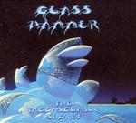

| Artist: | Glass Hammer |
| Title: | The Inconsolable Secret |
| Label: | Arion Records SR1320 |
| Length(s): | 40+59 minutes |
| Year(s) of release: | 2005 |
| Month of review: | [12/2005] |
| 1) | A Maker Of Crowns | 15.21 |
| 2) | The Knight Of The North | 24.39 |
Disc 2: The Lady
| 1) | Long And Long Ago | 10.23 |
| 2) | The Morning She Woke | 5.36 |
| 3) | Lirazel | 4.30 |
| 4) | The High Place | 3.33 |
| 5) | Morrigan's Song | 2.23 |
| 6) | Walking Toward Doom | 2.06 |
| 7) | Mog Ruith | 2.03 |
| 8) | Through A Glass Darkly | 6.55 |
| 9) | The Lady Waits | 5.46 |
| 10) | The Mirror Cracks | 2.12 |
| 11) | Having Caught A Glimpse | 13.23 |
The second and last track then. We open with a medieval part, but soon the bass is rumbling again and the organ adding a measure of bombast. Again, the themes are excellent, this time conveyed by a string orchestra. The music really dances. The vocals plus harmony are very Kansas like, with elements of Spock's Beard (in the Morse days). But it has to be said, although Glass Hammer takes the safe road towards acclaim in the symphonic rock world, they do have the sense of melody, composition and yes that bit of magic to keep things interesting. This song does have a long and fiddly keyboard/organ intermezzo strongly in the vein of ELP, but also friendly acoustics and the heavily pronounced bass sound. There is also some playful harpsichord, with some frolic keyboards added. The end has some nice bombast with vocals choirs going full-out, and a strong old-Genesis feel in the keyboards right before. Also the string orchestra retuns for the finale.
On disc two then, we the average song length is quite a bit lower, but still we start off with the lengthy Long And Long Ago. The song opens with classical, but melodic piano. Soon after, the keyboards set in for an up-beat Yes styled passage. This song is a bit rowdier than those on the first disc with some furious guitar play, but to compensate also some stylish church organ and light flute play. The music walks the fine line between the complex muscled prog and the romantic and very English feel of early Genesis. On this song, we hear the female vocalist for the first time. Susie's voice has similarities to that of Tracy Hitchings, but a bit softer and warmer.
The Morning She Woke is a Moore bouncy piece, but also with some typical Banksian elements and some mellotron. The vocal line is not so impressive this time. The middle passage is a combination of many types of keyboards and also helps to build up some tension.
The protagonist of the story is Lirazel. The harpsichord is the instrument of choice for the opening of this song. Then the strings come in again, building a slow, moody piece full of sad melody. The vocals sound crystal clear, and slightly folky. With the The High Place we are in an acoustic mood lined by vocal choirs. The vocals give a classical feel, as does the instrumentation in fact. It is quite easy to think of soundtrack music here.
More folk on Morrigan's Song, but Walking Toward Doom is quite different with its slightly dark classical leaning. The ghost of Emerson and the bass of Squire runs through the pacey Mog Ruith. There is a quite a bit less vocals on this disc it seems to me, it is now the music that tells a story.
The opening of Through A Glass Darkly by comparison is slightly formless, unstructured, but also a resting point after its predecessor. Then the vocals set in with the piano and we have a light passage for the more proggy keys set in. The Lady Waits is an instrumental piece in which the string orchestra is the only? factor. It makes the impression of soundtrack all the stronger. The Mirror Cracks is similar, but darker. They all prepare for the final feat, Having Caught A Glimpse. This is Glass Hammer in top form, building up slowly from military drums and a strong theme played on the keyboards/organ. The vocals are shared between Susie and Walter. The grand finale is excellent.